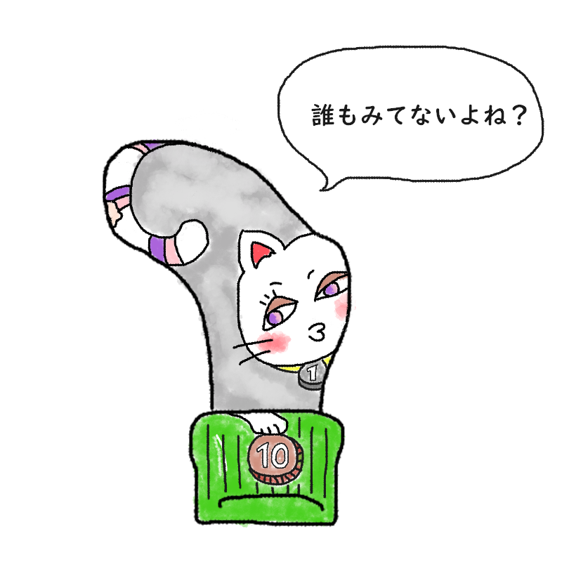

あなたの診断結果
？ ？ ？ （キャラクター名前募集中）薬指の先端にあく人
【足ゆび界の孤独を嫌う求道者！
人懐っこさは超一流。ちゃっかり小銭を足裏へ隠す
二面性マスタータイプ】

「ひとりは嫌だニャ……！
あ、そこに落ちてる10円玉、誰も見てないよね……
サッ（完全犯罪・足裏隠し）」
外見は気ままな一匹狼風を装いつつ、中身はベッタリ甘えん坊。部屋の隅に転がるわずかな光を見逃さない、抜け目のないお宝ハンタータイプ！
あなたは、「まわりからは『なんとなく優雅で我が道をいくお洒落さん』だと思われているのに、本当は誰かと一緒じゃないと不安で仕方なく、部屋の片隅に落ちるピカピカした小銭には獣のような眼光を向けてしまうタイプ」です。
解剖学的に「他の指と一緒にしか動けない」という薬指の宿命をそのまま体現しており、本人は誰かにベッタリくっついて生きていたいのに、なぜか勝手に周囲から「独立独歩のクールな奴」と誤解されがち。
その切なさを紛らわすためか、日々の最大の関心事はもっぱら「足元に転がっているお宝（小銭）の確保」です。
フローリングの溝や机の隙間に光る1円玉を発見した瞬間の動体視力はプロ並み。
周囲の人間が
「あれ、なんか落ちてなかった？」と振り返るコンマ数秒の隙を突き、完全なるポーカーフェイスを保ったまま、靴下の穴の隙間から華麗に足裏へ滑り込ませる『極秘の足裏回収（二面性マスターの技）』を日々淡々と遂行しています。
寂しがり屋な猫の生態
- 指環をつける優雅なポジションのくせに、中身は完全に「誰かについていきたい甘えっ子」
- 「自由人だよね」と言われるたびに、「違うニャ、ただ一人になりたくないだけだニャ…」と内心ハンカチを噛んでいる
- 拾った小銭を足裏に隠すときの「ぬきあし、さしあし、忍び足」のスキルが、無駄に高すぎる
- 圧倒的な人懐っこさと、ちゃっかりした蓄財スキルのギャップで、なんだかんだ周囲に可愛がられてしまう
最後にひとつ。
今日も誰かの足元で、こっそり光る小銭を足裏に回収している寂しがり屋の猫よ。
その鮮やかすぎる
二面性マスターの技を、今すぐすべての人間たちに布告せよ！
このキャラクターに名前をつける
思いついた名前を教えてね！
※このスタンプには日陰に消えたボツキャラが混ざっています
※この診断はただのお遊びです。
※靴下の穴が開く場所には個人差があります。